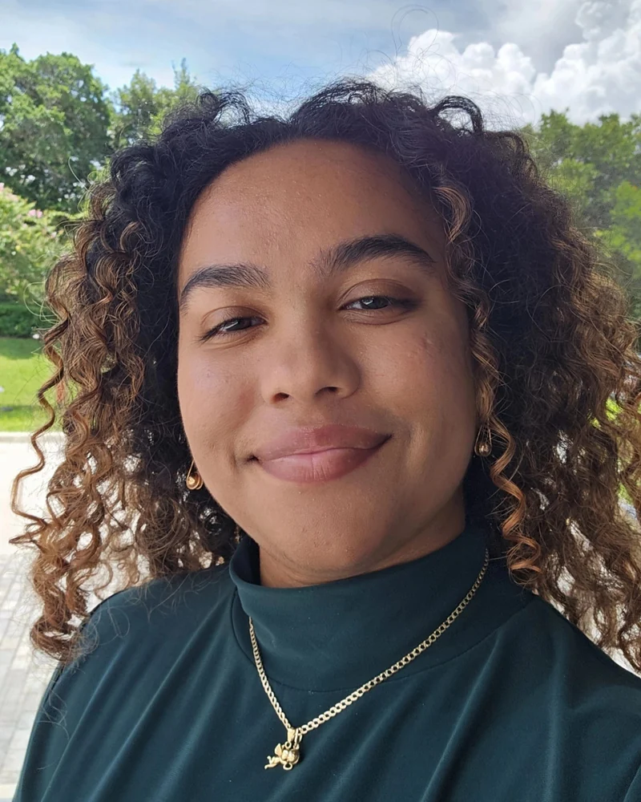

About me
Making complex software genuinely joyful to use.
I'm a UX and product designer who loves meeting end users where they work: understanding their workflows through contextual research, then partnering with engineers to turn what I learn into intuitive, visually polished products. I move fluidly from sketches and wireframes to high-fidelity mockups and interactive prototypes.
My path is a little unusual. I studied Digital Arts & Sciences at the University of Florida, built 3D worlds for VR games, and today work in 3D robotic surgery imaging at Stryker. That mix of healthcare technology, 3D and game development shapes how I design: balancing appealing visuals with real technical constraints, always in service of the people using the product.
Based in South Florida
What I bring
UX & Visual Design
Sketching, wireframing, high-fidelity mockups, interactive prototyping, information architecture, visual/UI design, and design systems & components.
Research & Discovery
Contextual inquiry, user interviews, workflow observation, personas, usability testing and competitive analysis.
3D & Interaction
3D modeling and texturing, spatial UX for VR, and an understanding of real-time technical constraints from game development.
Experience
3D Robotic Surgery Imaging Technician · Stryker
Oct 2024 – Present · Weston, FLCollaborate with engineering and quality teams to analyze surgical imaging workflows, redesigning processes that improved accuracy and production efficiency by 30%. Ran the Q12 Ambassador initiative, using user interviews and qualitative research to turn team pain points into prioritized recommendations for leadership.
Freelance 3D Designer · Self-employed
Oct 2022 – Oct 2024 · RemoteDesigned digital assets and onboarding experiences for clients. Data-informed onboarding materials and visual flows drove a 15% increase in lead conversions.
Environment Artist · CyberDream VR
Jan – Apr 2022 · RemoteDesigned UI/UX elements and onboarding tutorials for immersive experiences, and partnered with engineers through design reviews and QA cycles. Read the case study.